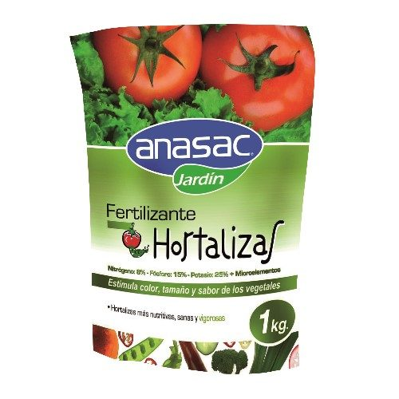
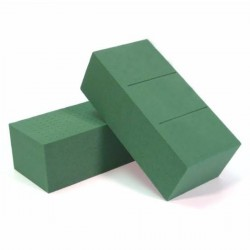
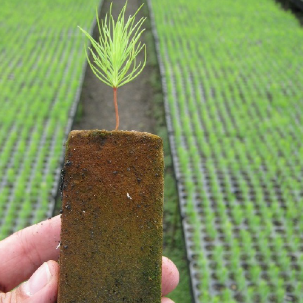
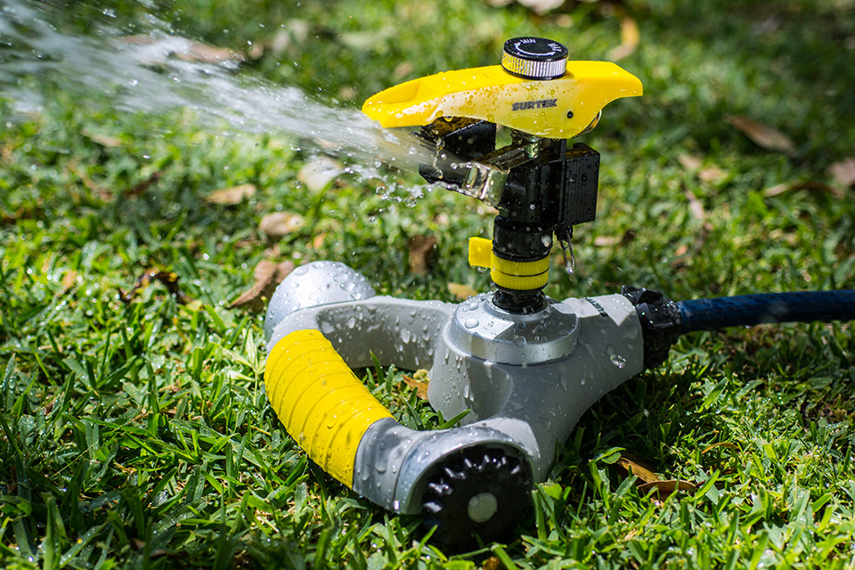
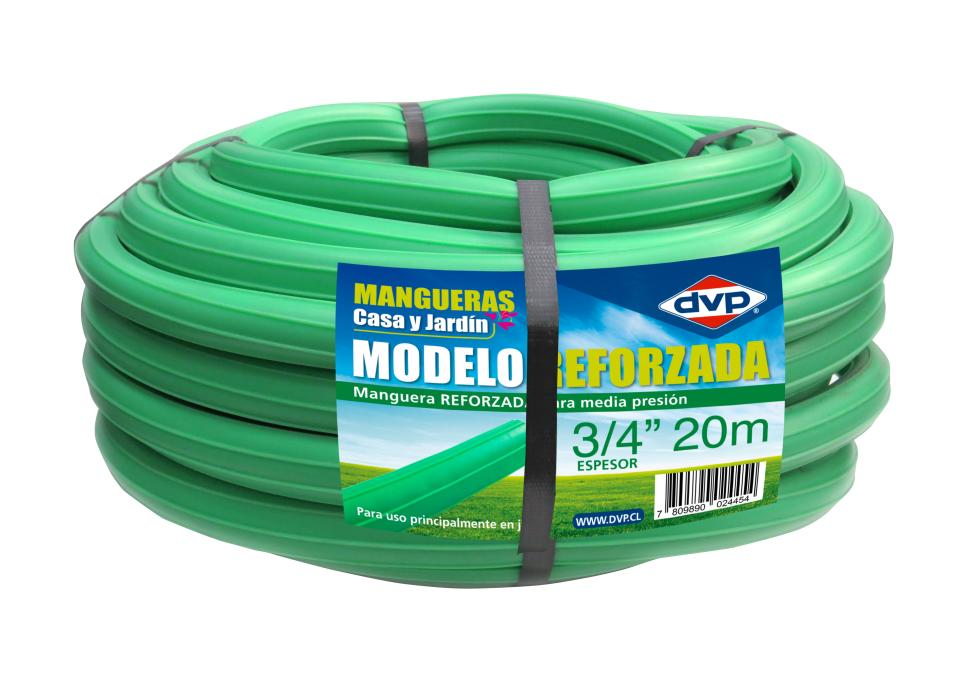
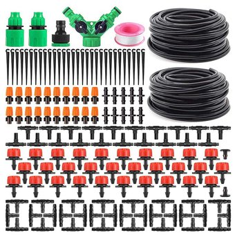
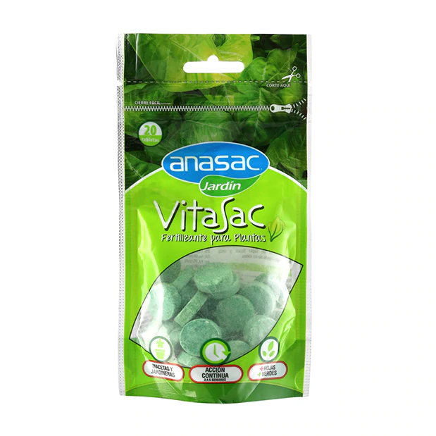
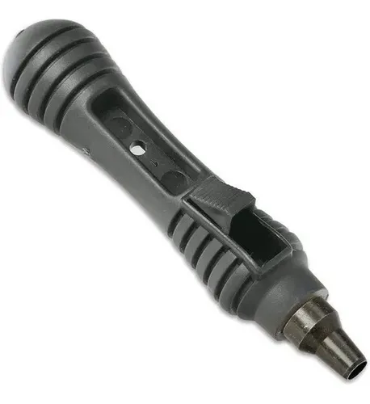

Suministros
Encuentra diversos tipos de productos que te ayudaran a mantener a tus plantas fuertes y saludables.
Fertilizante
Los fertilizantes son sustancias ricas en nutrientes que se utilizan para mejorar las características del suelo para un mayor desarrollo de los cultivos agrícolas
$11.999
Tierra de hojas

Producto Premium especialmente formulado para iniciar tus cultivos de hortalizas en el hogar proporcionando el medio ideal para la germinación de tus semillas preferidas. Contiene una carga de fertilizante que ayuda en el establecimiento de los inicios del cultivo. Contiene pH equilibrado y un agente humectante que ayuda a una mayor retención de humedad. -Producto homogéneo y de gran pureza, libre de insectos y agentes patógenos.
$9.999
Espuma floral
Está hecho de Basalto y unido con tecnología Ecose, un tipo de sacarosa. Puede utilizarse para flores tanto frescas como secas y de seda. Puedes cortar o romper pedazos de piezas desechadas o de los bloques donde las flores han terminado de florecer. Puedes usarla como substituto de la tierra en una maceta o florero.
$1.790
Espuma agricola
El foamy agrícola es una espuma fenólica utilizada en la producción de hortalizas, la cual actúa como un medio físico para dar soporte a la planta. Logra un balance ideal de agua y aire conteniendo un 80% de agua y un 20% de aire en su interior, lo que permite que las raíces se desarrollen adecuadamente.
$13.990
Aspersor
El uso de un aspersor facilita el riego en áreas amplias de manera constante y homogénea. Modelo 130319 posee clips y retenes para ajustarse y regular el área de riego, tiene un ángulo de 360°.
$2.990
Manguera
Lleva el agua a cualquier lugar con el uso de una manguera. Las dimensiones de ésta dependerán de los espacios donde se suela trabajar. El modelo M12S100 cuenta con un tejido especialmente diseñado para evitar deformaciones y aumentar la vida útil y resistencia de las mangueras.
$11.990
kit de riego
Sistema diseñado para satisfacer las necesidades de los pequeños agricultores que quieren regar pequeñas zonas como por ejemplo huertos. RECOMENDADO PARA: La conservación del agua. Mejorar gestión del agua y de cultivos, incluso en condiciones meteorológicas adversas.
$19.990
Vitamina B2
La producción y secreción de vitamina B2 o riboflavina y algunos de sus derivados por las raíces de algunas especies vegetales facilita la toma de hierro y, por tanto, su adaptación a ambientes pobres en este nutriente.
$4.990
Perforador de manguera por goteo
El perforador de orificios de tubería adopta material de aleación de alta calidad como cabezal de perforación, que puede ayudarlo eficazmente a abrir un orificio en la tubería para insertar un conector o boquilla.